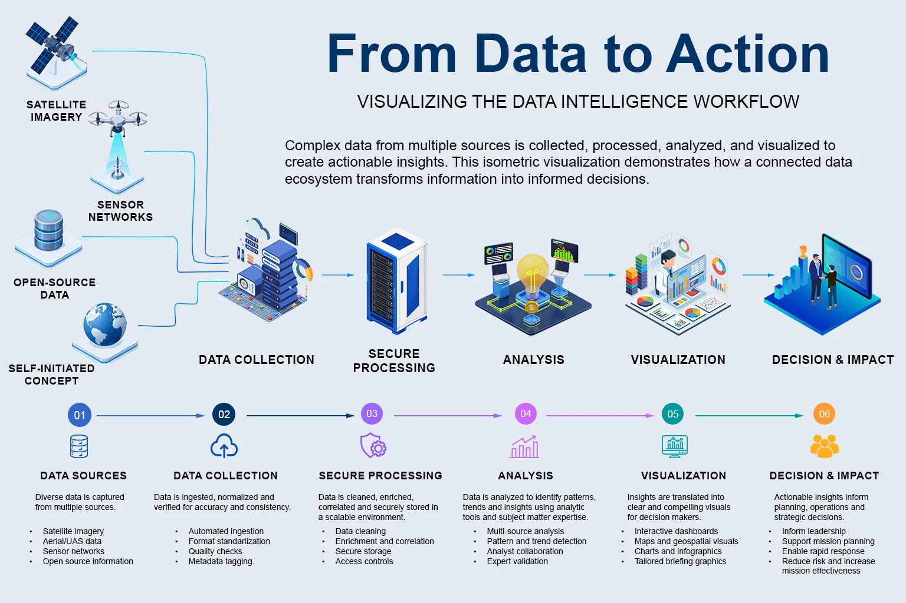
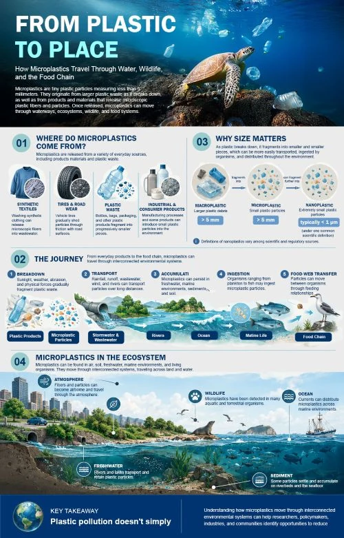
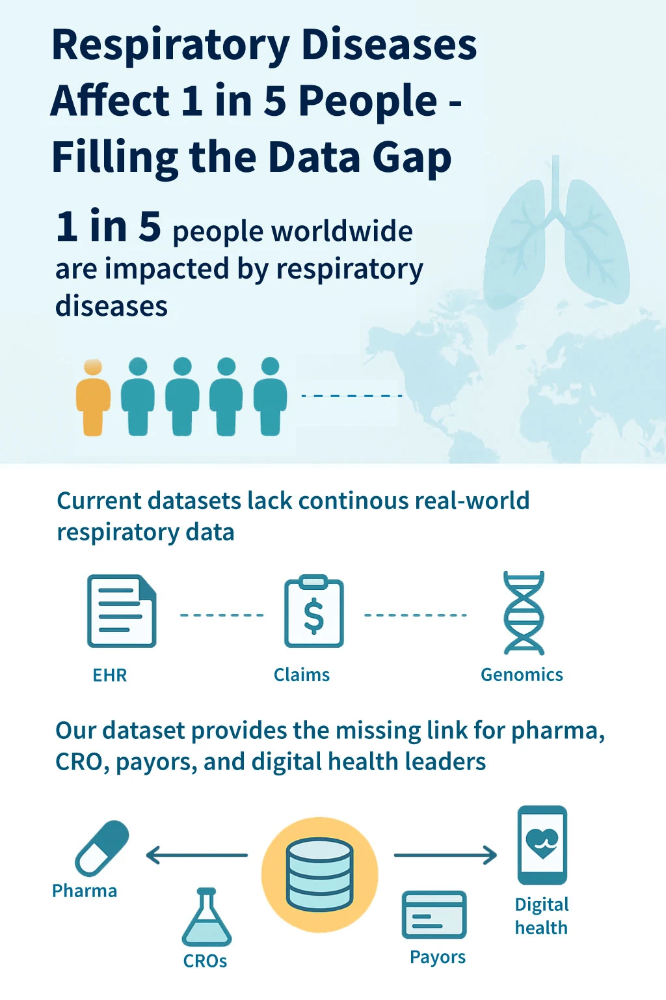
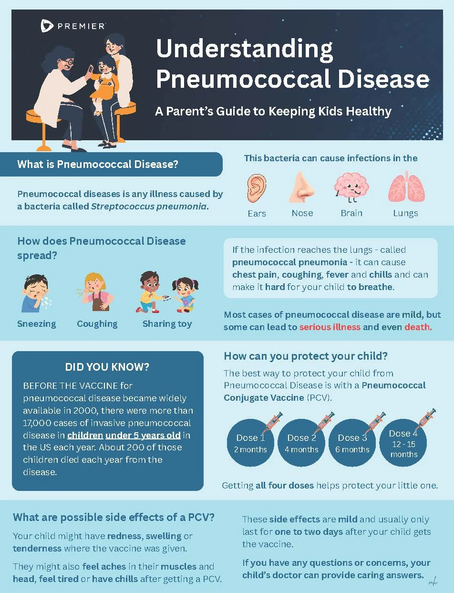
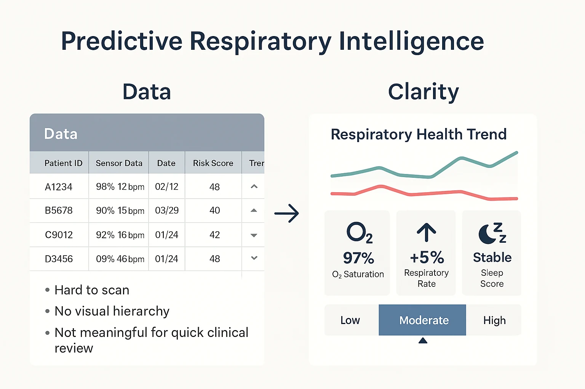
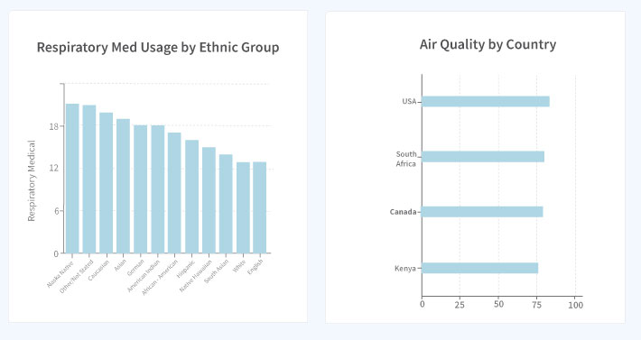
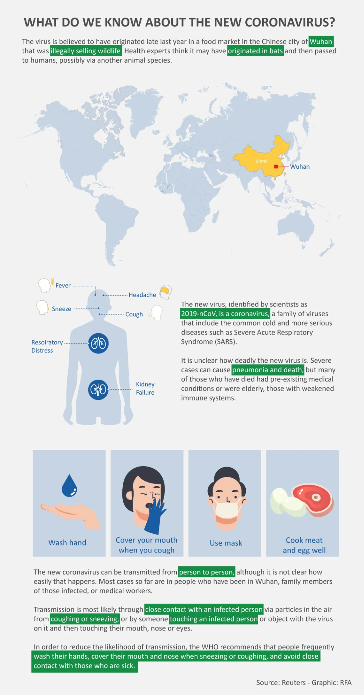
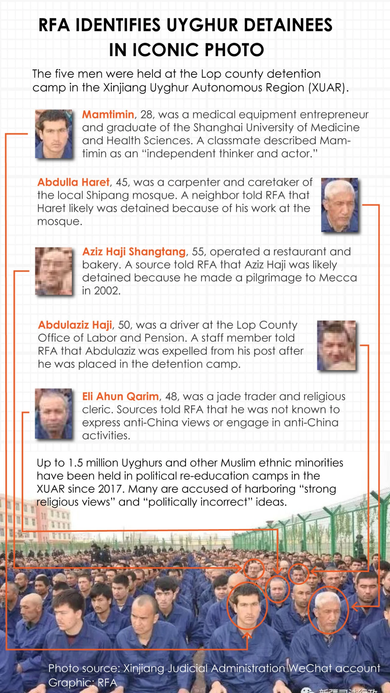
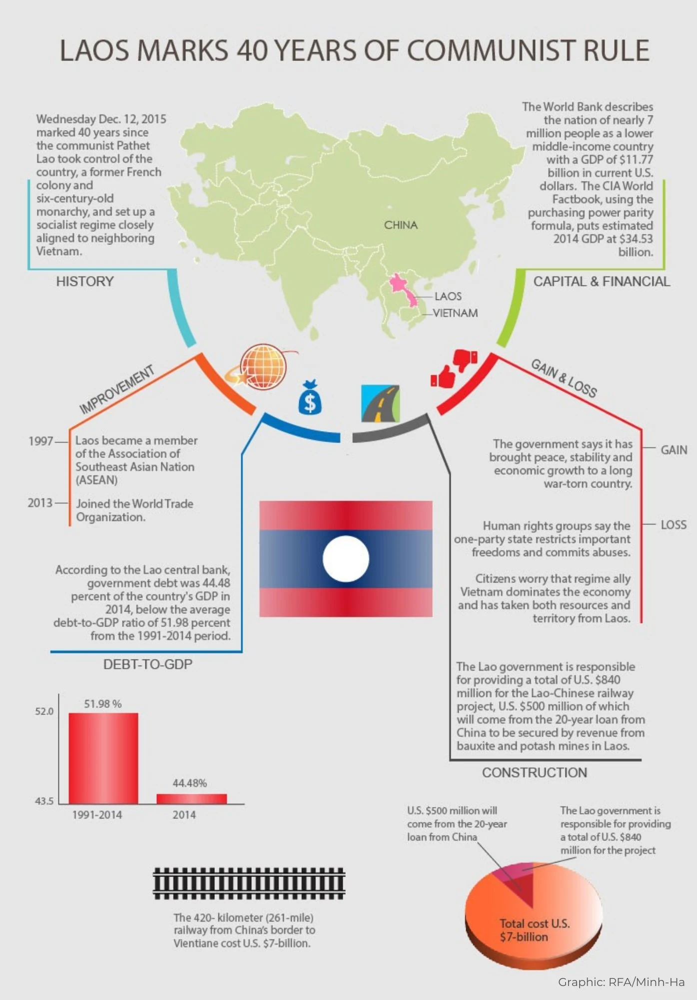
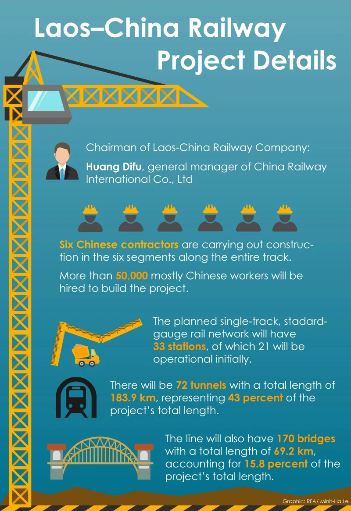

SELECTED WORK / DATA VISUALIZATION & INFORMATION DESIGN
Infographics & Information Design.
Transforming complex subjects into clear, compelling visuals—from technical workflows and scientific explanations to investigative maps and editorial data storytelling.
01 / PORTFOLIO OVERVIEW
Designing clarity from complexity.
My approach to information design combines research, structured storytelling, visual hierarchy, illustration, and careful use of color. Whether explaining a technical process or communicating a sensitive news story, I organize information to help audiences understand the central message quickly.
This collection includes self-directed concepts, healthcare communications, and editorial graphics created for Radio Free Asia. The featured work below uses original project artwork.
- Discipline
- Infographics & information design
- Focus
- Technical, scientific & editorial storytelling
- Formats
- Isometric graphics, maps, charts, explainers
- Tools
- Illustrator, Photoshop, Figma & data visualization
02 / FEATURED WORK
Visual storytelling across disciplines.
A selection of original visuals demonstrating how different information structures call for different design solutions.


03 / TECHNICAL INFORMATION DESIGN
From Data to Action.
A visual explanation of how information moves from satellite imagery, sensor networks, and open-source data through collection, secure processing, analysis, and decision-making. The connected isometric scenes make a multi-stage technical workflow easier to follow.
Isometric technical illustration / Self-directed concept
Visualizing a connected process.
A visual explanation of how information moves from satellite imagery, sensor networks, and open-source data through collection, secure processing, analysis, and decision-making. The connected isometric scenes make a multi-stage technical workflow easier to follow.
Self-directed portfolio concept.
04 / SCIENTIFIC STORYTELLING
From Plastic to Place.
A research-informed visual narrative exploring the sources, movement, and environmental pathways of microplastics. Illustrated cross-sections, process diagrams, and labeled stages support understanding of a complex subject.
Environmental infographic / Self-directed concept
Making the story easier to navigate.
A research-informed visual narrative exploring the sources, movement, and environmental pathways of microplastics. Illustrated cross-sections, process diagrams, and labeled stages support understanding of a complex subject.
Self-directed portfolio concept.
05 / HEALTH & DATA COMMUNICATION
Respiratory health and data clarity.
A selection of healthcare visuals translating medical and respiratory-health information into accessible diagrams, concise statistics, and more legible data displays.

Healthcare information design
Making the story easier to navigate.
A selection of healthcare visuals translating medical and respiratory-health information into accessible diagrams, concise statistics, and more legible data displays.
Portfolio sample shown for visual communication and information-design purposes.




Historical public-health graphics are presented as design samples, not current medical guidance.
06 / EDITORIAL INFORMATION DESIGN
People behind the photograph.
A portrait-led infographic identifying five Uyghur men in a widely circulated detention-camp photograph. Profiles, annotations, and the original photograph connect individual stories with a larger reported event.

Radio Free Asia / Editorial infographic
Making the story easier to navigate.
A portrait-led infographic identifying five Uyghur men in a widely circulated detention-camp photograph. Profiles, annotations, and the original photograph connect individual stories with a larger reported event.
Portfolio sample shown for visual communication and information-design purposes.
07 / MAPS & INVESTIGATIVE GRAPHICS
Mapping religious heritage loss.
A geographic overview of mosques and shrines reported destroyed or damaged in Xinjiang. The design pairs map markers with a site-by-site list to connect location, historical context, and reported dates.

Radio Free Asia / Editorial map
Making the story easier to navigate.
A geographic overview of mosques and shrines reported destroyed or damaged in Xinjiang. The design pairs map markers with a site-by-site list to connect location, historical context, and reported dates.
Portfolio sample shown for visual communication and information-design purposes.
08 / REGIONAL DATA STORYTELLING
Laos: politics, economy, and infrastructure.
Two complementary editorial graphics combine maps, timelines, charts, icons, and infrastructure statistics to explain political and economic developments in Laos and the scope of the Laos–China railway project.

Radio Free Asia / Editorial infographics
Making the story easier to navigate.
Two complementary editorial graphics combine maps, timelines, charts, icons, and infrastructure statistics to explain political and economic developments in Laos and the scope of the Laos–China railway project.
Portfolio sample shown for visual communication and information-design purposes.

EXPLORE MORE WORK
See how these principles extend to presentation design.
Executive Presentations & Visual Storytelling ↗ · Branding & Corporate Identity ↗